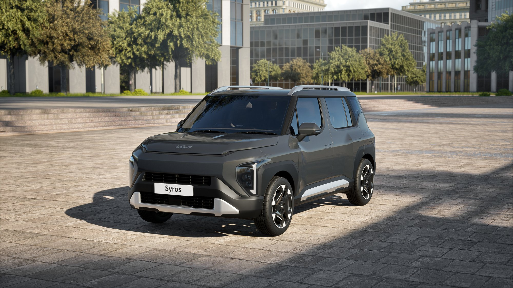
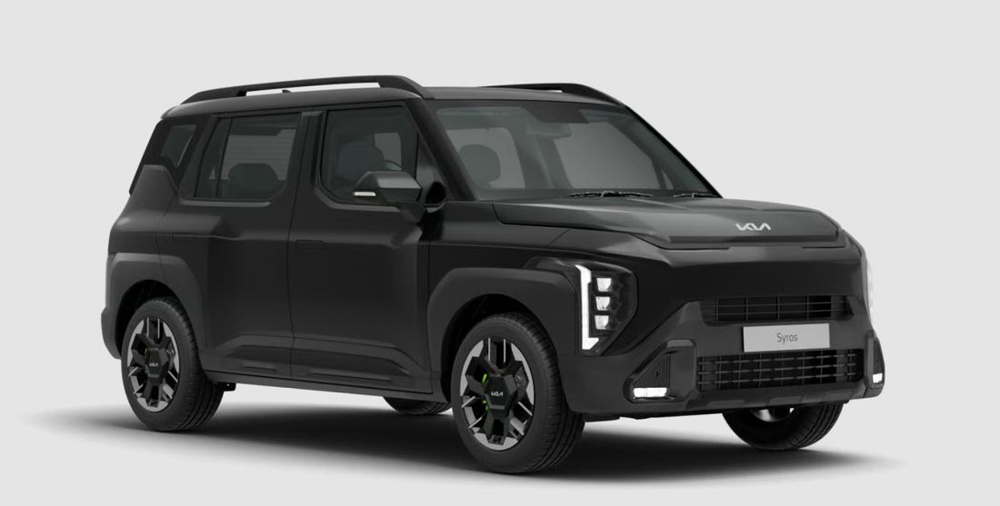
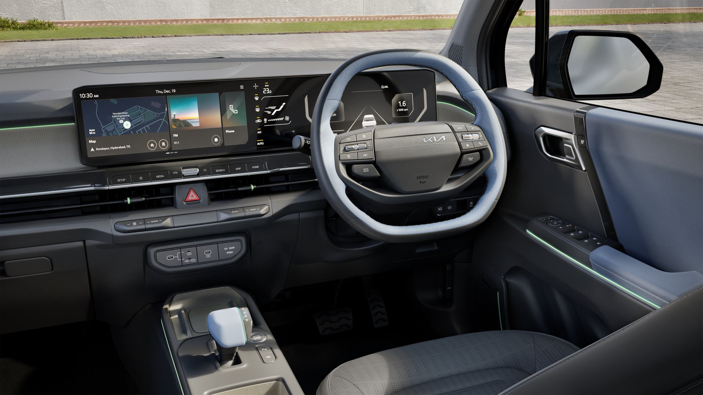
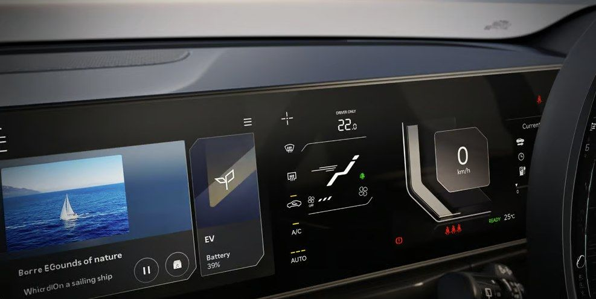
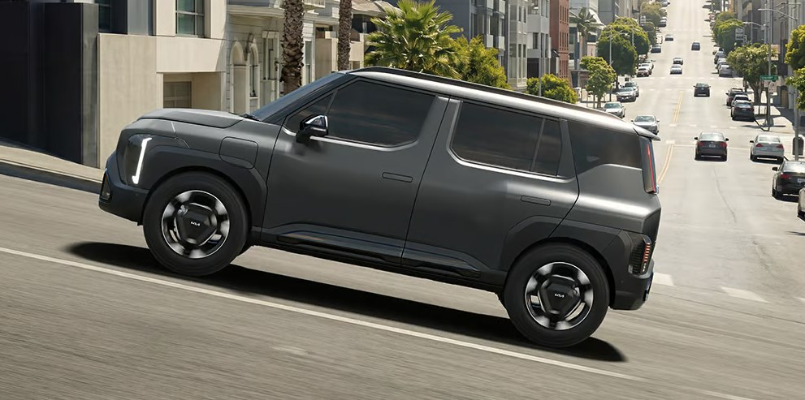
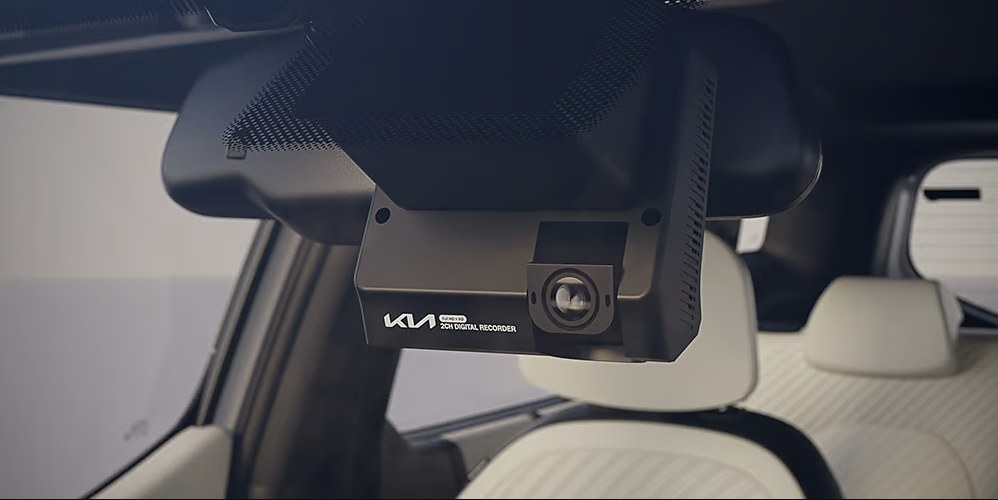

Kia Syros EV Review: Range, Price, Features & Should You Buy It (2026)

Image: Kia India
Kia's pitch for the Syros EV is simple: longest range in the class, fastest charging in the class, and a cabin stuffed with more tech than anything else at this price. That's a big claim to make with a straight face. Prices start at ₹13,49,900 and climb across seven trims to the range-topping X-Line ER, and the real question isn't whether Kia can back up the spec sheet. It's whether any of it matters if you're not buying the one trim that actually has it.
Quick Verdict
On paper, this is a genuinely well-specified electric SUV. Strong range, fast charging, a battery warranty long enough to remove most of the usual EV anxiety. It's a strong pick for tech-focused, city-based buyers, with one honest caveat: this review is built on Kia's official specifications, not a real-world test drive, so treat the driving experience as the one unconfirmed variable.
1
Price & Variants
₹13.49 – ₹19.99 Lakh*
*Ex-showroom, India
| Variant | Battery Pack | Ex-Showroom Price |
|---|---|---|
| HTK | 42 kWh | ₹13.49 Lakh |
| HTX+ ER | 51.4 kWh | ₹16.99 Lakh |
| X-Line ER | 51.4 kWh | ₹19.99 Lakh |
Seven trims, two battery packs. The 42kWh unit claims 443km, and the larger 51.4kWh Extended Range pack pushes that to a certified 526km, which is the number Kia actually wants you looking at. There's also a Battery-as-a-Service plan that unbundles the battery entirely, dropping the effective starting price to around ₹7.99 lakh and billing the battery separately, per kilometre. It's a genuinely useful option if the upfront cost is what's holding you back, not a gimmick.
Best Value Pick
Skip the base HTK and start at the HTK+. Yes, the entry trim is cheaper, and yes, that's exactly the problem: it skips the rear camera and cruise control, two things most buyers will simply expect as standard in 2026. HTK+ fixes both, throws in faster 100W charging, and still doesn't commit you to the larger, pricier 51.4kWh battery. The Extended Range packs only earn their premium if the extra real-world range genuinely changes how you drive day to day. For most buyers, it won't.
2
Exterior Design

Image: Kia India
Kia's "Digital Tiger Face" front end, paired with Ice Cube MFR LED headlamps and Star Map-pattern LED daytime running lights, actually looks like it was designed as an EV, not adapted from something with a tailpipe. The rear carries the theme through with Starmap LED tail lamps, an integrated spoiler, and a shark-fin antenna. Flush-mounted "Auto Streamline" door handles, glossy black roof rails, and puddle lamps that project the Kia logo onto the ground round it out, and none of it feels accidental. Kia is positioning this above segment norms on purpose. Wheels run 16-inch on base trims up to 17-inch crystal-cut dual-tone alloys higher up, and the jump is worth seeing in person before you decide it doesn't matter.
3
Interior Design

Image: Kia India
The cabin's centrepiece is a 30-inch (76.2cm) Trinity panoramic display fusing instrument cluster, infotainment, and climate readouts into one glass panel, which Kia calls a segment-first at this price and, for once, isn't exaggerating. A floating centre console with a sliding cover, retractable cup holders, and open storage keeps things tidy rather than cluttered. Go higher up the range and you get a dual-pane panoramic sunroof and 64-colour ambient lighting with LED footwell lamps, though only on the X-Line. Kia claims best-in-segment second-row space, backed by a 60:40 split rear bench that slides and reclines, and a 465-litre boot that's genuinely large for the class, not "large for the class" in the way brochures usually mean it.
4
Features

Image: Kia India
The feature list is genuinely dense for this segment: an 8-speaker Harman Kardon sound system, wireless phone charging, ventilated front and rear seats, a 4-way power driver's seat, a dual-camera dashcam with mobile app access. Connectivity runs through Kia Connect 2.0, and the number Kia leads with is over 95 features, covering OTA software updates, remote window control, scheduled charging, remote battery conditioning, multilingual voice commands, smartwatch access. Digital Key, the feature that lets you lock, unlock, and start the car from your phone, sounds like it should be standard by now. It isn't. It's reserved for the top X-Line trim only, so don't assume you're getting it just because you're buying an EV in 2026.
Standard safety runs to 6 airbags, a 360-degree camera, electronic stability control, and hill-start assist, which is a solid baseline. Full ADAS Level 2 with 16 autonomous features exists too, and here's the part worth repeating clearly: it's exclusive to the range-topping X-Line ER, not the lineup as a whole. We break down exactly what's included and what's gated to which trim in the Tech & Safety Deep-Dive below, because this is exactly the kind of detail that gets glossed over in a showroom.
A few smaller touches carry over from the wider Syros range too: 64-colour ambient mood lighting, the Harman Kardon 8-speaker system, and a fully automatic climate control panel on its own dedicated 5-inch touchscreen. None of it moves the needle on its own. Together, it's the kind of polish that makes the cabin feel considered rather than assembled.
5
Performance

Image: Kia India
| Specification | Detail |
|---|---|
| Power Output | 171 PS |
| Certified Range | 526 km (ARAI MIDC-Full) |
| DC Fast Charging | 10%–80% in ~39 min (100kW charger) |
| AC Charging | 11 kW |
| Gear Selector | Shift-by-Wire, column-type |
| Regen Control | Steering-mounted paddle shifters, i-Pedal mode |
| Battery Warranty | Lifetime HV battery warranty, 15 years, unlimited km (first owner) |
171 PS and 526 km range are both class-leading figures, and Kia knows it, which is why they're the first two numbers on every spec sheet. The 39-minute fast-charge time (10 to 80%) is the one that actually changes how you'd use this car day to day, turning a road trip from an anxiety exercise into a coffee break. The lifetime high-voltage battery warranty does real work here too. It's aimed squarely at the one hesitation that stops most first-time EV buyers from committing, and it's hard to argue with the logic.
6
Tech & Safety Deep-Dive

Image: Kia India
The 30-inch (76.2cm) Trinity Panoramic Display is the centrepiece, and Kia Connect 2.0 backs it up with a genuinely deep feature set: 95+ features by Kia's count, covering remote window control, a "find my car" locator, multilingual voice commands, smartwatch access, OTA software updates, scheduled charging, remote battery conditioning. Digital Key, using your phone to lock, unlock, and start the car, is real and it works. It's also gated to the X-Line ER trim only, so if you're eyeing a mid-spec variant, don't assume you're getting it. You're not.
Driver-assistance follows the exact same pattern. Full ADAS Level 2 with 16 autonomous features, front collision-avoidance, smart cruise control with stop-and-go, lane keep assist, high-beam assist, driver attention warning, a blind-view monitor built into the cluster, sits on exactly one trim: the X-Line ER. Every other variant in the seven-trim range, including the mid-spec ER models, misses out entirely. That's a real gap, not a rounding error. What you do get everywhere else is still solid for the segment: 6 airbags, a 360-degree camera, electronic stability control, hill-start assist, and the dual-camera dashcam with mobile app access.
Where the Syros EV actually earns its keep is ownership confidence, not cabin tech. Kia backs the high-voltage battery with a lifetime warranty, specifically 15 years and unlimited kilometres for the first owner, and pairs it with an Assured Buyback programme guaranteeing up to 70% resale value at the three-year mark, plus a 10% introductory top-up. Add the Battery-as-a-Service option that drops the entry price to around ₹7.99 lakh, and K-Charge, Kia's 20,000+ point charging network, all managed from the same Connect app, and you've got an ownership package that's been thought through properly. This is the kind of detail that matters far more, day to day, than a 0-100 time ever will.
How We Scored This
Following our Review Methodology, we rate every review across eight criteria, then average them into the final Octane Score.
| Criteria | Score |
|---|---|
| Design | 9.0 / 10 |
| Performance | 8.5 / 10 |
| Mileage Potential | 9.5 / 10 |
| Comfort | 8.0 / 10 |
| Features | 9.5 / 10 |
| Safety | 7.5 / 10 |
| Practicality | 8.5 / 10 |
| Value for Money | 8.0 / 10 |
| Octane Score (average) | 8.6 / 10 |
7
Verdict
The spec sheet doesn't need defending. Range, charging speed, and warranty coverage all lead or match the best in the class, and the feature list punches well above what most buyers would expect at this price. Kia built this car to remove every objection to buying an EV, one line item at a time. Whether it actually rides and lives up to that promise on real roads is the one thing this spec sheet can't tell you, and it's worth confirming yourself before you sign anything.
Who Should Buy This
- First-time EV buyers who want the reassurance of a lifetime battery warranty and buyback programme
- City-based drivers who want the segment's fastest charging for occasional longer trips
- Tech-focused buyers who'll actually use a large display and a deep connected-app feature set
- Buyers with reliable home or workplace charging access
Who Should Avoid This
- Buyers who want proven long-term reliability data, since this is a new-generation model without a track record yet
- Anyone without consistent access to charging at home or work
- Buyers who prioritize driving dynamics and outright performance over range and practicality
- Budget-focused buyers, since pricing sits closer to premium compact SUVs than entry-level EVs
FAQs
What is the price of the Kia Syros EV?
The Syros EV starts at ₹13,49,900 and runs up to ₹19.99 Lakh for the top-spec X-Line ER trim.
What is the range of the Kia Syros EV?
Up to 526 km certified range (ARAI MIDC-Full) on the larger 51.4kWh Extended Range battery pack. The base 42kWh pack claims 443km.
How fast does the Syros EV charge?
10% to 80% in about 39 minutes on a 100kW DC fast charger.
Does every Syros EV trim get ADAS?
No. Full ADAS Level 2 with 16 autonomous features is exclusive to the range-topping X-Line ER trim only, not the lineup generally.
Which Syros EV variant should I buy?
The HTK+. It adds the rear camera and cruise control missing from the base HTK, plus faster 100W charging, without committing to the pricier 51.4kWh battery.
What is the battery warranty on the Syros EV?
A lifetime high-voltage battery warranty: 15 years, unlimited kilometres, for the first owner.
Does the Syros EV have Digital Key?
Yes, but it's reserved for the top X-Line trim only, not the lineup at large.
Is the Kia Syros EV worth buying?
The spec sheet is genuinely competitive on range, charging, and features. This review is based on Kia's official specifications rather than a road test, so ride comfort and everyday usability are the one thing left to confirm yourself.